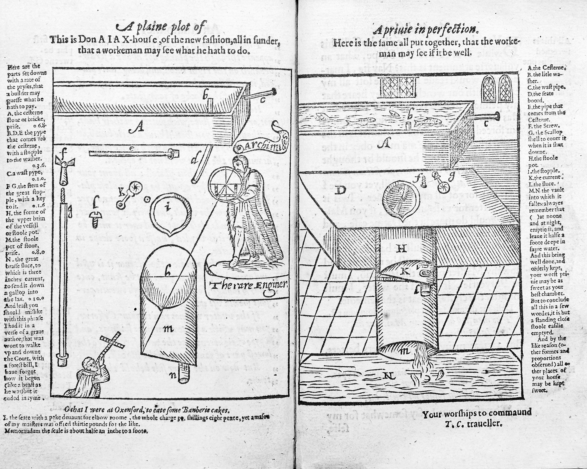

General Notes
L2: Why did public health decline during the Middle Ages?
Learning Objectives

Do Now Activity
Vocabulary Check
Write a historically accurate sentence connecting two terms from the glossary box below.
Q3. Identify the main method of waste disposal in medieval villages like Wharram Percy.
Q4. Describe the sanitation facilities found in medieval monasteries like Canterbury Priory.
Q5. How does the water management system at Titchfield Abbey support the idea that monasteries were much healthier places to live than Medieval towns?
Q6. Explain why overcrowded medieval towns faced a filtration crisis.
Q7. Explain the role of gongfermers in medieval towns.
Q8. Evaluate the significance of Edward III's cleanliness mandate in 1349.
Pair & Share Activity
Prompt: Discuss with your partner: Who had better public health, a Roman soldier or a Medieval monk?
Think: Spend 1 minute quietly considering the question and forming your own opinion.
Writing Practice
- Mention the lack of sewers.
- Mention what people believed caused disease (miasma).
General Notes
L3: To what extent did towns become filthier during the Early Modern period?
Learning Objectives

Do Now Activity
Vocabulary Check
Write a clear definition and a historically accurate sentence for the term: conduit
Q3. Identify who invented the first flushing water closet.
Q4. Describe the purpose of the New River project in 1613.
Q5. If you lived in the overcrowded, walled town of Tudor Portsmouth, what risks would you face from the lack of proper sewers and overflowing cesspits?
Q6. Explain what Samuel Pepys' diary reveals about Early Modern privies.
Q7. Evaluate the effectiveness of Early Modern water sellers for public health.
Pair & Share Activity
Prompt: Discuss with your partner: Why didn't Sir John Harington's flush toilet become popular instantly?
Think: Spend 1 minute quietly considering the question and forming your own opinion.
Writing Practice
- Mention overcrowding.
- Mention the amount of waste produced.
General Notes
L4: How did the Industrial Revolution lead to a public health crisis?
Learning Objectives

Chronological Domino Flowchart
Task: The historical events below are out of order. Read them carefully, then use your pen to draw arrows connecting the boxes in the correct chronological and causal order (Event A ➔ Event B ➔ Event C...).
Rural Britain
Most of the population lives and works in the countryside.
First Factories
Steam-powered textile mills begin mass production.
First Cholera Epidemic
Cholera arrives in Britain, killing thousands.
Chadwick's Report
Edwin Chadwick publishes his damning report on sanitary conditions.
Rapid Urbanisation
Millions migrate to industrial towns looking for work.
Vocabulary Check
Fill in the blanks using the vocabulary words below.
Rapid __________________ meant cities grew too fast. The government believed in __________________, doing nothing to help. This led to a terrible __________________ of __________________, forcing people to finally take __________________ seriously.
Q3. Identify two effects of the industrial population surge on factory towns.
Q4. Describe the living conditions in industrial back-to-back housing.
Q5. Why did rapid population growth in places like Portsea make the 1849 cholera outbreak so devastating for the local community?
Q6. Explain how the cholera epidemics forced the government to act.
Q7. Evaluate the significance of Edwin Chadwick's 1842 report.
Pair & Share Activity
Prompt: Discuss with your partner: Was it fair for the government to follow a 'laissez-faire' attitude?
Think: Spend 1 minute quietly considering the question and forming your own opinion.
Writing Practice
- Explain what people used to believe (miasma).
- Explain what Snow proved about water.
General Notes
L5: Why did it take the 'Great Stink' to finally clean up Britain's streets?
Learning Objectives

Do Now Activity
Vocabulary Check
Write a historically accurate sentence connecting two terms from the glossary box below.
Q3. Identify what John Snow's Broad Street map proved about cholera.
Q4. Describe the impact of the Great Stink on Parliament in 1858.
Q5. How did the construction of the Eastney Beam Engine House in 1887 solve the exact same public health crisis in Portsmouth that Bazalgette solved in London?
Q6. Explain how Joseph Bazalgette's sewer system solved London's waste problem.
Q7. Explain the link between Louis Pasteur's Germ Theory and sanitation.
Q8. Evaluate the significance of the 1875 Public Health Act for modern sanitation.
Pair & Share Activity
Prompt: Discuss with your partner: What finally forced Parliament to act?
Think: Spend 1 minute quietly considering the question and forming your own opinion.
Writing Practice
- Mention the removal of sewage.
- Mention the end of cholera epidemics.